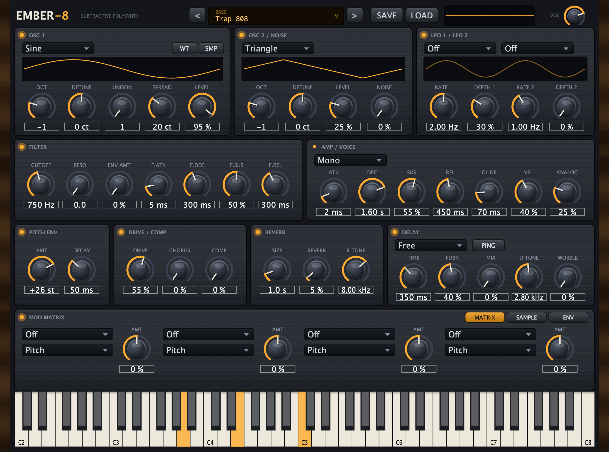
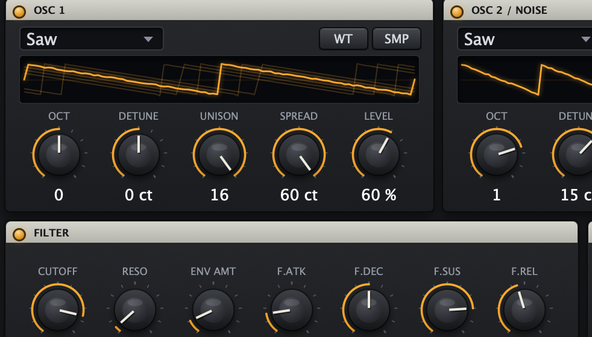
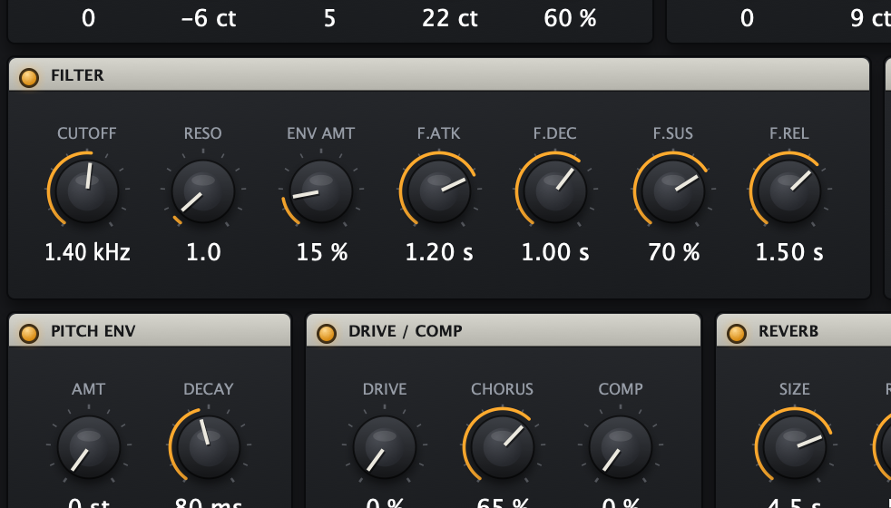

Ember-8 is a polysynth built for beatmakers — alias-free oscillators, a Moog-style filter, 808s with real slides, and 61 presets that sit in a mix without surgery.

The built-in demo riff cycling through presets — captured from the free browser version, which runs the same architecture as the plugin.
Mipmapped, band-limited oscillators. Measured aliasing below −116 dB at every pitch — clean where cheap synths get harsh.
Dedicated pitch envelope for the attack, mono glide for real 808 slides, and a 4×-oversampled drive stage for saturation without grit.
24 dB/oct analog-modeled lowpass with musical resonance and its own ADSR.
Two LFOs plus a 4-slot mod matrix — route velocity, envelopes, or LFOs to pitch, cutoff, resonance, or amp. Poly, mono, and true legato voice modes.
BPM-synced (straight / dotted / triplet), tone-shaped feedback, and tape-style wobble that detunes the repeats.
Grab an LFO or envelope chip and drop it on any knob — every valid target lights up, and modulated knobs show live depth rings.
Load any single-cycle WAV into OSC 1. It's band-limited automatically, so it stays clean at every note.
Drop any one-shot onto the window: trim, loop, chop it across the keys (equal or hand-placed slices), lock it to a key, or fit it to your project's BPM.
Drop an .sfz instrument — like the free Salamander
Grand — and Ember-8 becomes a multisampled piano: velocity
layers, sustain pedal, 32 voices.
Granulizer, zero-delay-feedback phaser, lofi crusher, and stereo width — on top of the plate reverb, synced delay, and glue compressor.
Velocity-sensitive, MIDI Learn on every knob, full host automation with readable values, presets savable from the GUI.

